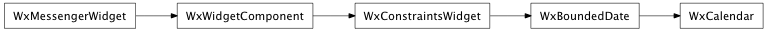

Bases: enaml.widgets.bounded_date.BoundedDate
A bounded date control which edits a Python datetime.date using a widget which resembles a calendar.
alias of __NoInterface__

Bases: enaml.qt.qt_bounded_date.QtBoundedDate
A Qt implementation of an Enaml Calendar.
Return the current date in the control.
| Returns: | result (QDate) – The current control date as a QDate object. |
|---|
Set the widget’s current date.
| Parameters: | date (QDate) – The QDate object to use for setting the date. |
|---|

Bases: enaml.wx.wx_bounded_date.WxBoundedDate
A Wx implementation of an Enaml Calendar.
Return the current date in the control.
| Returns: | result (wxDateTime) – The current control date as a wxDateTime object. |
|---|
Set the widget’s current date.
| Parameters: | date (wxDateTime) – The wxDateTime object to use for setting the date. |
|---|